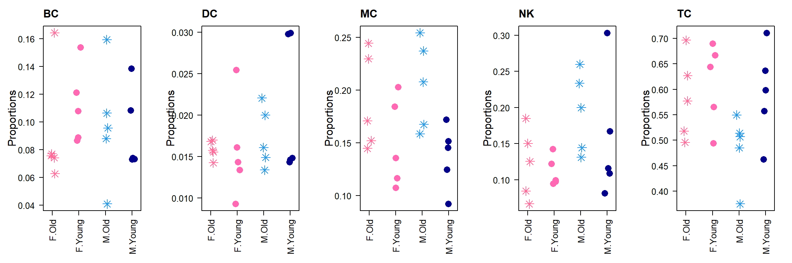

Application to real single cell RNA-seq datasets
Belinda Phipson
06/03/2022
Last updated: 2022-08-19
Checks: 7 0
Knit directory: propeller-paper-analysis/
This reproducible R Markdown analysis was created with workflowr (version 1.7.0). The Checks tab describes the reproducibility checks that were applied when the results were created. The Past versions tab lists the development history.
Great! Since the R Markdown file has been committed to the Git repository, you know the exact version of the code that produced these results.
Great job! The global environment was empty. Objects defined in the global environment can affect the analysis in your R Markdown file in unknown ways. For reproduciblity it’s best to always run the code in an empty environment.
The command set.seed(20220531) was run prior to running
the code in the R Markdown file. Setting a seed ensures that any results
that rely on randomness, e.g. subsampling or permutations, are
reproducible.
Great job! Recording the operating system, R version, and package versions is critical for reproducibility.
Nice! There were no cached chunks for this analysis, so you can be confident that you successfully produced the results during this run.
Great job! Using relative paths to the files within your workflowr project makes it easier to run your code on other machines.
Great! You are using Git for version control. Tracking code development and connecting the code version to the results is critical for reproducibility.
The results in this page were generated with repository version 3bd56e0. See the Past versions tab to see a history of the changes made to the R Markdown and HTML files.
Note that you need to be careful to ensure that all relevant files for
the analysis have been committed to Git prior to generating the results
(you can use wflow_publish or
wflow_git_commit). workflowr only checks the R Markdown
file, but you know if there are other scripts or data files that it
depends on. Below is the status of the Git repository when the results
were generated:
Ignored files:
Ignored: .Rhistory
Ignored: .Rproj.user/
Ignored: data/cold_warm_fresh_cellinfo.txt
Ignored: data/heartFYA.Rds
Ignored: data/pool_1.rds
Untracked files:
Untracked: analysis/PlotsForPaper.Rmd
Untracked: data/TypeIErrTables.Rdata
Untracked: data/appnote1cdata.rdata
Untracked: data/nullsimsVaryN_results.Rdata
Untracked: output/1x/
Untracked: output/Fig1ab.pdf
Untracked: output/Fig1cde.pdf
Untracked: output/Fig2ab.pdf
Untracked: output/Fig2abc.pdf
Untracked: output/Fig2c.pdf
Untracked: output/Figure1.pdf
Untracked: output/Figure1.png
Untracked: output/Figure2-01.png
Untracked: output/Figure2-with#.pdf
Untracked: output/Figure2-with#.png
Untracked: output/Figure2.ai
Untracked: output/Figure2.pdf
Untracked: output/Figure2.png
Untracked: output/Figure2_E_annotatedwithProp.pdf
Untracked: output/Figure3.pdf
Untracked: output/Figure3.png
Untracked: output/PDF/
Untracked: output/SuppFig4.pdf
Untracked: output/SuppFig4.png
Untracked: output/SuppTrueDiff10.pdf
Untracked: output/SuppTrueDiff20.pdf
Untracked: output/SuppTrueDiff3.pdf
Untracked: output/Supplementary Figure 2 v2.png
Untracked: output/Supplementary Figure 2.ai
Untracked: output/Supplementary Figure 2.pdf
Untracked: output/Supplementary Figure 2.png
Untracked: output/SupplementaryFigure3.pdf
Untracked: output/TrueDiffSimResults.Rda
Untracked: output/covidResults.pdf
Untracked: output/example_simdata.pdf
Untracked: output/extremeCaseTrueProps20CT.pdf
Untracked: output/fig2d.pdf
Untracked: output/gude-2022-06-27.log
Untracked: output/gude-2022-06-29.log
Untracked: output/heartResults.pdf
Untracked: output/heatmap20CT.pdf
Untracked: output/legend-fig2d.pdf
Untracked: output/pbmcOldYoungResults.pdf
Untracked: output/type1error5.csv
Untracked: output/typeIerrorResults.Rda
Note that any generated files, e.g. HTML, png, CSS, etc., are not included in this status report because it is ok for generated content to have uncommitted changes.
These are the previous versions of the repository in which changes were
made to the R Markdown (analysis/RealDataAnalysis.Rmd) and
HTML (docs/RealDataAnalysis.html) files. If you’ve
configured a remote Git repository (see ?wflow_git_remote),
click on the hyperlinks in the table below to view the files as they
were in that past version.
| File | Version | Author | Date | Message |
|---|---|---|---|---|
| Rmd | 3bd56e0 | bphipson | 2022-08-19 | update real data analysis |
| html | f900e44 | bphipson | 2022-08-18 | Build site. |
| Rmd | 2586453 | bphipson | 2022-08-18 | update analysis scripts |
| html | 1613612 | bphipson | 2022-06-06 | Build site. |
| Rmd | 622390e | bphipson | 2022-06-06 | update real data analysis |
| html | a39985a | bphipson | 2022-06-03 | Build site. |
| Rmd | cf6f450 | bphipson | 2022-06-03 | add real data analysis |
Introduction
We analysed three different publicly available single cell datasets to highlight the different types of models that can be fitted within the propeller framework.
- Young and old female and male PBMCs
- Huang, Zhaohao, Binyao Chen, Xiuxing Liu, He Li, Lihui Xie, Yuehan Gao, Runping Duan, et al. 2021. “Effects of Sex and Aging on the Immune Cell Landscape as Assessed by Single-Cell Transcriptomic Analysis.” Proceedings of the National Academy of Sciences of the United States of America 118 (33). https://doi.org/10.1073/pnas.2023216118.
- Healthy human heart biopsies across development
- Sim, Choon Boon, Belinda Phipson, Mark Ziemann, Haloom Rafehi, Richard J. Mills, Kevin I. Watt, Kwaku D. Abu-Bonsrah, et al. 2021. “Sex-Specific Control of Human Heart Maturation by the Progesterone Receptor.” Circulation 143 (16): 1614–28.
- Bronchoalveolar lavage fluid in a COVID19 dataset
- Liao, Mingfeng, Yang Liu, Jing Yuan, Yanling Wen, Gang Xu, Juanjuan Zhao, Lin Cheng, et al. 2020. “Single-Cell Landscape of Bronchoalveolar Immune Cells in Patients with COVID-19.” Nature Medicine 26 (6): 842–44.
For all three datasets we use the logit transformation, except for the covid dataset. In the covid dataset, there is clearly an outlier for the plasma cell type. Using the logit transformation, plasma is found to be significantly enriched in severe covid, but using the arcsin square root transform shows that it is not significantly enriched. While logit may be more powerful according to the simulations, it appears sensitive to outliers, and in this case we would prefer to use the arcsin square root transform.
Load libraries
library(speckle)
library(limma)
library(edgeR)
library(pheatmap)
library(gt)source("./code/convertData.R")Young and old female and male PBMCs
This dataset was published in PNAS in 2021 and examined PBMCs from 20 individuals. The dataset was balanced in terms of age and sex (5 samples in each group: Male + Young, Male + Old, Female + Young, Female + Old).
The data analysis reported in the paper was ANOVA directly on cell type proportions modelling sex and age plus interaction. It was not clear from the description whether separate models were fitted for sex and age, removing the interaction term in order to interpret the effects for sex and age correctly.
From the supplementary data I have extracted the cell type proportions and using information from the paper I have converted the proportions into the necessary data type (a list object) to analyse with propeller.
Broad cell types analysis
sexCT <- read.delim("./data/CTpropsTransposed.txt", row.names = 1)
sexprops <- sexCT/100
prop.list <- convertDataToList(sexprops,data.type="proportions", transform="logit",
scale.fac=174684/20)
sampleinfo <- read.csv("./data/sampleinfo.csv", nrows = 20)
celltypes <- read.csv("./data/CelltypeLevels.csv")
group.immune <- paste(sampleinfo$Sex, sampleinfo$Age, sep=".")
celltypes$Celltype_L0 <- celltypes$Celltype_L1
celltypes$Celltype_L0[celltypes$Celltype_L1 == "CD4" | celltypes$Celltype_L1 == "CD8" | celltypes$Celltype_L1 == "CD4-CD8-" | celltypes$Celltype_L1 == "CD4+CD8+" | celltypes$Celltype_L1 == "T-mito"] <- "TC"gt(data.frame(table(sampleinfo$Sex, sampleinfo$Age)), rownames_to_stub = TRUE, caption="Sample info for aging dataset")| Var1 | Var2 | Freq | |
|---|---|---|---|
| 1 | female | old | 5 |
| 2 | male | old | 5 |
| 3 | female | young | 5 |
| 4 | male | young | 5 |
levels(factor(celltypes$Celltype_L0))[1] "BC" "DC" "MC" "NK" "TC"sexprops.broad <- matrix(NA,nrow=length(levels(factor(celltypes$Celltype_L0))), ncol=ncol(sexprops))
rownames(sexprops.broad) <- levels(factor(celltypes$Celltype_L0))
colnames(sexprops.broad) <- colnames(sexprops)
for(i in 1:ncol(sexprops.broad)) sexprops.broad[,i] <- tapply(sexprops[,i],celltypes$Celltype_L0,sum)
prop.broad.list <- convertDataToList(sexprops.broad,data.type="proportions", transform="logit", scale.fac=174684/20)par(mfrow=c(1,5))
par(mar=c(6,5,3,2))
for(i in 1:nrow(sexprops.broad)){
stripchart(as.numeric(sexprops.broad[i,])~group.immune,
vertical=TRUE, pch=c(8,16), method="jitter",
col = c(ggplotColors(20)[20],"hotpink",4, "darkblue"),cex=2,
ylab="Proportions", cex.axis=1.25, cex.lab=1.5,
group.names=c("F.Old","F.Young","M.Old","M.Young"), las=2)
title(rownames(sexprops.broad)[i], cex.main=1.5, adj=0)
}
designAS <- model.matrix(~0+sampleinfo$Age + sampleinfo$Sex)
colnames(designAS) <- c("old","young","MvsF")
# Young vs old
mycontr <- makeContrasts(young-old, levels=designAS)
propeller.ttest(prop.list = prop.broad.list,design = designAS, contrasts = mycontr,
robust=TRUE,trend=FALSE,sort=TRUE) PropMean.old PropMean.young PropRatio Tstatistic P.Value FDR
MC 0.19656790 0.14320118 0.7285074 -2.4782763 0.01517944 0.07589718
TC 0.53445740 0.60263724 1.1275684 1.7958220 0.07607623 0.19019057
NK 0.15808995 0.13347185 0.8442779 -1.2139485 0.22812958 0.38021597
BC 0.09432895 0.10249865 1.0866086 0.8453907 0.40026618 0.50033273
DC 0.01655580 0.01819108 1.0987734 0.2439462 0.80786033 0.80786033designSex <- model.matrix(~0+sampleinfo$Sex + sampleinfo$Age)
colnames(designSex) <- c("female","male","YvO")
# Male vs female
mycontr <- makeContrasts(male-female, levels=designSex)
propeller.ttest(prop.list = prop.broad.list,design = designSex, contrasts = mycontr,
robust=TRUE,trend=FALSE,sort=TRUE) PropMean.female PropMean.male PropRatio Tstatistic P.Value FDR
NK 0.1169176 0.17464421 1.4937377 2.68780027 0.008652239 0.0432612
TC 0.5973764 0.53971825 0.9034811 -1.50690429 0.135542825 0.3388571
DC 0.0157718 0.01897507 1.2031011 1.09443016 0.276858018 0.4614300
BC 0.1011660 0.09566164 0.9455912 -0.46829428 0.640772810 0.8009660
MC 0.1687683 0.17100082 1.0132286 0.06740726 0.946415797 0.9464158Refined cell types analysis
Young vs Old
Set up design matrix using a means model, taking into account age and sex.
designAS <- model.matrix(~0+sampleinfo$Age + sampleinfo$Sex)
colnames(designAS) <- c("old","young","MvsF")
# Young vs old
mycontr <- makeContrasts(young-old, levels=designAS)
propeller.ttest(prop.list = prop.list,design = designAS, contrasts = mycontr,
robust=TRUE,trend=FALSE,sort=TRUE) PropMean.old PropMean.young PropRatio Tstatistic P.Value
CD8.Naive 0.0251316033 0.0901386289 3.5866645 4.56531629 0.0001655915
CD16 0.0346697484 0.0184110417 0.5310405 -3.53845105 0.0019313526
T-mito 0.0050757865 0.0030999505 0.6107330 -2.70564864 0.0130970606
INTER 0.0237901860 0.0160354568 0.6740366 -2.34264441 0.0288651941
CD4-CD8- 0.0160339954 0.0301971880 1.8833227 2.26893189 0.0338557770
TREG 0.0224289338 0.0173984106 0.7757128 -2.26167176 0.0342259694
CD14 0.1381079661 0.1087546814 0.7874613 -1.75042587 0.0943497196
ABC 0.0042268748 0.0024242272 0.5735271 -1.53059704 0.1406904913
CD4.Naive 0.1048008357 0.1320789977 1.2602857 1.46557604 0.1574740245
MBC 0.0358736549 0.0452983191 1.2627183 1.33884893 0.1948341805
CD8.CTL 0.1154952554 0.0782456785 0.6774796 -1.31085637 0.2039626408
PC 0.0054708831 0.0049397487 0.9029162 -1.26307895 0.2203089287
pre-DC 0.0002285096 0.0003193005 1.3973177 1.24144109 0.2280358887
CDC1 0.0005479607 0.0008647764 1.5781725 1.19434388 0.2455671742
CD8.Tem 0.0639345157 0.0802785262 1.2556367 1.14556222 0.2646082927
NK3 0.0886767142 0.0704022112 0.7939199 -1.02022467 0.3191513408
NK1 0.0125858088 0.0102540186 0.8147286 -0.64532282 0.5256577519
NBC 0.0487575349 0.0498363513 1.0221261 0.49890406 0.6229966249
CD4.Tem 0.0873700973 0.0832684783 0.9530547 -0.40297138 0.6909611645
CD4.Tcm 0.0799349205 0.0746146497 0.9334425 0.23348683 0.8176285211
PDC 0.0031666984 0.0034597825 1.0925519 0.20366298 0.8405637766
CD4+CD8+ 0.0142514516 0.0133167354 0.9344126 -0.11420442 0.9101389532
NK2 0.0568274310 0.0528156246 0.9294037 0.04492635 0.9645875142
CDC2 0.0126126342 0.0135472159 1.0740989 0.03134858 0.9752816776
FDR
CD8.Naive 0.003974195
CD16 0.023176231
T-mito 0.104776485
INTER 0.136903877
CD4-CD8- 0.136903877
TREG 0.136903877
CD14 0.323484753
ABC 0.419930732
CD4.Naive 0.419930732
MBC 0.420972299
CD8.CTL 0.420972299
PC 0.420972299
pre-DC 0.420972299
CDC1 0.420972299
CD8.Tem 0.423373268
NK3 0.478727011
NK1 0.742105062
NBC 0.830662167
CD4.Tem 0.872793050
CD4.Tcm 0.960644316
PDC 0.960644316
CD4+CD8+ 0.975281678
NK2 0.975281678
CDC2 0.975281678Visualise significant cell types:
par(mfrow=c(1,2))
stripchart(as.numeric(sexprops["CD8.Naive",])~group.immune,
vertical=TRUE, pch=c(8,16), method="jitter",
col = c(ggplotColors(20)[20],"hotpink",4, "darkblue"),cex=2,
ylab="Proportions", cex.axis=1.25, cex.lab=1.5,
group.names=c("F.Old","F.Young","M.Old","M.Young"))
title("CD8.Naive: Young Vs Old", cex.main=1.5, adj=0)
text(3.2,0.18, labels = "Adj.Pval = 0.004")
stripchart(as.numeric(sexprops["CD16",])~group.immune,
vertical=TRUE, pch=c(8,16), method="jitter",
col = c(ggplotColors(20)[20],"hotpink",4, "darkblue"),cex=2,
ylab="Proportions", cex.axis=1.25, cex.lab=1.5,
group.names=c("F.Old","F.Young","M.Old","M.Young"))
title("CD16: Young Vs Old", cex.main=1.5, adj=0)
text(2.2,0.049, labels = "Adj.Pval = 0.023")
pbmc.oldyoung <- propeller.ttest(prop.list = prop.list,design = designAS, contrasts = mycontr,
robust=TRUE,trend=FALSE,sort=TRUE)
sig.pbmc <- rownames(pbmc.oldyoung)
pdf(file="output/pbmcOldYoungResults.pdf",width = 13, height=13)
par(mfrow=c(6,4))
par(mar=c(4,5,2,2))
for(i in 1:length(sig.pbmc)){
stripchart(as.numeric(sexprops[sig.pbmc[i],])~group.immune,
vertical=TRUE, pch=c(8,16), method="jitter",
col = c(ggplotColors(20)[20],"hotpink",4, "darkblue"),cex=2,
ylab="Proportions", cex.axis=1.25, cex.lab=1.5,
group.names=c("F.Old","F.Young","M.Old","M.Young"))
title(paste(sig.pbmc[i],": Young Vs Old", sep=""), cex.main=1.5, adj=0)
legend("top", legend = paste("Adj.Pval = ",round(pbmc.oldyoung$FDR,3)[i],sep=""),cex=1.5,bty="n",bg="n")
}
dev.off()png
2 Male vs female
designSex <- model.matrix(~0+sampleinfo$Sex + sampleinfo$Age)
colnames(designSex) <- c("female","male","YvO")
# Male vs female
mycontr <- makeContrasts(male-female, levels=designSex)
propeller.ttest(prop.list = prop.list,design = designSex, contrasts = mycontr,
robust=TRUE,trend=FALSE,sort=TRUE) PropMean.female PropMean.male PropRatio Tstatistic P.Value
PC 0.0071388502 0.003271782 0.4583065 -3.1669247 0.004618248
pre-DC 0.0001775081 0.000370302 2.0861130 2.5110134 0.020226075
CDC2 0.0114064513 0.014753399 1.2934258 1.6325785 0.117165640
NK2 0.0457752659 0.063867790 1.3952467 1.5116244 0.145428553
CD4-CD8- 0.0169315724 0.029299611 1.7304720 1.5102803 0.145769120
T-mito 0.0034714265 0.004704310 1.3551520 1.4058711 0.174095994
NK3 0.0607526719 0.098326253 1.6184680 1.1335501 0.269669984
NK1 0.0103896562 0.012450171 1.1983237 1.1164933 0.276735756
CD8.CTL 0.1180843551 0.075656579 0.6406994 -1.1131493 0.278136717
CDC1 0.0005883982 0.000824339 1.4009883 1.0905509 0.287740106
PDC 0.0035994459 0.003027035 0.8409725 -1.0645655 0.299076537
CD8.Naive 0.0547935108 0.060476721 1.1037205 0.9733622 0.341375491
CD8.Tem 0.0747782768 0.069434765 0.9285419 -0.7670999 0.451391030
TREG 0.0209130057 0.018914339 0.9044295 -0.7245891 0.476541303
CD16 0.0281162892 0.024964501 0.8879017 -0.7035509 0.489386405
ABC 0.0035141234 0.003136979 0.8926774 -0.5597871 0.581505744
CD4.Naive 0.1243810258 0.112498808 0.9044692 -0.5287280 0.602499455
NBC 0.0497589512 0.048834935 0.9814301 0.4375921 0.666118271
CD4+CD8+ 0.0134400072 0.014128180 1.0512033 0.4252468 0.674896446
MBC 0.0407540321 0.040417942 0.9917532 -0.3094240 0.760026981
INTER 0.0206287843 0.019196858 0.9305860 -0.2751525 0.785834451
CD14 0.1200231846 0.126839463 1.0567913 0.2749839 0.785962262
CD4.Tcm 0.0843546548 0.070194915 0.8321404 -0.1934495 0.848452765
CD4.Tem 0.0862285523 0.084410023 0.9789104 -0.1642394 0.871081911
FDR
PC 0.1108380
pre-DC 0.2427129
CDC2 0.6525306
NK2 0.6525306
CD4-CD8- 0.6525306
T-mito 0.6525306
NK3 0.6525306
NK1 0.6525306
CD8.CTL 0.6525306
CDC1 0.6525306
PDC 0.6525306
CD8.Naive 0.6827510
CD8.Tem 0.7830182
TREG 0.7830182
CD16 0.7830182
ABC 0.8505875
CD4.Naive 0.8505875
NBC 0.8525008
CD4+CD8+ 0.8525008
MBC 0.8574134
INTER 0.8574134
CD14 0.8574134
CD4.Tcm 0.8710819
CD4.Tem 0.8710819Heart development analysis
This dataset was published by Sim et al in 2021 and looked at heart development across fetal, young and adult developmental time points. There are three samples at each developmental time point. There is also mix of male and female samples and one of the key findings of the study was transcriptional differences in cardiomyocyte development between males and females.
Here we look at differences in cellular composition of human hearts across the developmental trajectory, taking sex into account.
We can simply perform an anova test to find any differences between the three time points. The propeller.anova function can be called to do this directly.
We can also look at development as a continuous trajectory and model development as a continuous variable by getting the transformed proportions and using fitting functions in limma directly.
Both of these analysis approaches are shown below.
heart.info <- read.csv(file="./data/cellinfo.csv", row.names = 1)
heart.counts <- table(heart.info$Celltype, heart.info$Sample)
trueprops <- rowSums(heart.counts)/sum(rowSums(heart.counts))
heart.info$Group <- NA
heart.info$Group[grep("f",heart.info$Sample)] <- "fetal"
heart.info$Group[grep("y",heart.info$Sample)] <- "young"
heart.info$Group[grep("a",heart.info$Sample)] <- "adult"
sample <- factor(heart.info$Sample, levels= paste(rep(c("f","y","a"), each=3),c(1:3),sep=""))
group <- factor(heart.info$Group, levels=c("fetal","young","adult"))grp <- factor(rep(c("fetal","young","adult"),each=3), levels=c("fetal","young","adult"))
sex <- factor(c("m","m","f","m","f","m","f","m","m"))
dose <- rep(c(1,2,3), each=3) The sample information is summarised below:
gt(data.frame(Sample=1:9,Group=grp, Sex=sex),caption="Sample info for heart dataset")| Sample | Group | Sex |
|---|---|---|
| 1 | fetal | m |
| 2 | fetal | m |
| 3 | fetal | f |
| 4 | young | m |
| 5 | young | f |
| 6 | young | m |
| 7 | adult | f |
| 8 | adult | m |
| 9 | adult | m |
Anova test with propeller.anova
For the original analysis in the published paper by Sim et al., we performed an ANOVA using propeller(logit).
prop.logit <- getTransformedProps(clusters = heart.info$Celltype, sample=sample,
transform = "logit")
design.anova <- model.matrix(~0+grp+sex)
propeller.anova(prop.logit,design = design.anova, coef=c(1,2,3), robust=TRUE,
trend = FALSE, sort=TRUE) PropMean.grpfetal PropMean.grpyoung PropMean.grpadult
Erythroid 0.004433044 0.00000000 0.000000000
Immune cells 0.027545963 0.10875124 0.189587828
Cardiomyocytes 0.682410381 0.42676145 0.273546585
Fibroblast 0.111342233 0.26192406 0.298689329
Neurons 0.012643346 0.02620977 0.011380837
Epicardial cells 0.051414853 0.07541028 0.093157709
Smooth muscle cells 0.008101973 0.00846540 0.009099294
Endothelial cells 0.102108207 0.09247781 0.124538418
Fstatistic P.Value FDR
Erythroid 42.8302506 1.162495e-13 9.299960e-13
Immune cells 10.3529005 9.295704e-05 3.718282e-04
Cardiomyocytes 7.6881182 8.440468e-04 2.250792e-03
Fibroblast 4.0630697 2.057471e-02 4.114942e-02
Neurons 1.3712270 2.592465e-01 4.147943e-01
Epicardial cells 0.7965363 4.541612e-01 6.055483e-01
Smooth muscle cells 0.3492357 7.062149e-01 7.326515e-01
Endothelial cells 0.3122046 7.326515e-01 7.326515e-01Modelling development as a continuous variable
Here we model the data in a different way with development as a continuous variable, and include sex as an additional covariate to control for.
des.dose <- model.matrix(~dose + sex)
des.dose (Intercept) dose sexm
1 1 1 1
2 1 1 1
3 1 1 0
4 1 2 1
5 1 2 0
6 1 2 1
7 1 3 0
8 1 3 1
9 1 3 1
attr(,"assign")
[1] 0 1 2
attr(,"contrasts")
attr(,"contrasts")$sex
[1] "contr.treatment"fit <- lmFit(prop.logit$TransformedProps,des.dose)
fit <- eBayes(fit, robust=TRUE)
topTable(fit,coef=2) logFC AveExpr t P.Value adj.P.Val
Immune cells 1.01359669 -2.4222033 4.2685426 0.0007551546 0.004980697
Erythroid -1.62960543 -7.8002460 -4.0140721 0.0012451742 0.004980697
Cardiomyocytes -0.91607837 -0.1936611 -3.4462160 0.0038586975 0.010289860
Fibroblast 0.62700537 -1.3756904 2.5326823 0.0236986525 0.047397305
Epicardial cells 0.29219063 -2.6566961 1.2026143 0.2487822518 0.398051603
Smooth muscle cells 0.18767427 -4.9125588 0.6717760 0.5125008180 0.603572791
Endothelial cells 0.13688475 -2.1652913 0.6467132 0.5281261918 0.603572791
Neurons -0.05626966 -4.1954452 -0.2315895 0.8201585898 0.820158590
B
Immune cells -0.3850285
Erythroid -0.8666233
Cardiomyocytes -1.9515138
Fibroblast -3.6607326
Epicardial cells -5.6855671
Smooth muscle cells -6.1705968
Endothelial cells -6.1872807
Neurons -6.3739773fit.plot <- lmFit(prop.logit$Proportions,des.dose)
fit.plot <- eBayes(fit.plot, robust=TRUE)The two analyses identify the same cell types as significantly enriched/depleted, although there is a change in the order of significance.
Three significant cell types are visualised below.
par(mfrow=c(1,3))
stripchart(as.numeric(prop.logit$Proportions["Immune cells",])~grp,
vertical=TRUE, pch=16, method="jitter",
col = ggplotColors(4),cex=2,
ylab="Proportions",cex.axis=1.25, cex.lab=1.5)
title("Immune development", cex.main=1.5, adj=0)
abline(a=fit.plot$coefficients["Immune cells",1], b=fit.plot$coefficients["Immune cells",2], lty=2, lwd=2)
stripchart(as.numeric(prop.logit$Proportions["Cardiomyocytes",])~grp,
vertical=TRUE, pch=16, method="jitter",
col = ggplotColors(4),cex=2,
ylab="Proportions",cex.axis=1.25, cex.lab=1.5)
title("Cardiomyocyte development", cex.main=1.5, adj=0)
abline(a=fit.plot$coefficients["Cardiomyocytes",1], b=fit.plot$coefficients["Cardiomyocytes",2], lty=2, lwd=2)
text(2.6,0.77, labels = "Adj.Pval = 0.01")
stripchart(as.numeric(prop.logit$Proportions["Fibroblast",])~grp,
vertical=TRUE, pch=16, method="jitter",
col = ggplotColors(4),cex=2,
ylab="Proportions",cex.axis=1.25, cex.lab=1.5)
title("Fibroblast development", cex.main=1.5, adj=0)
abline(a=fit.plot$coefficients["Fibroblast",1], b=fit.plot$coefficients["Fibroblast",2], lty=2, lwd=2)sig.heart <- rownames(topTable(fit,coef=2))
grp <- factor(rep(c("fetal","young","adult"),each=3), levels=c("fetal","young","adult"))
pdf(file="output/heartResults.pdf",width = 13, height=6)
par(mfrow=c(2,4))
par(mar=c(4,5,2,2))
for(i in 1:length(sig.heart)){
stripchart(as.numeric(prop.logit$Proportions[sig.heart[i],])~grp,
vertical=TRUE, pch=16, method="jitter",
col = ggplotColors(4),cex=2,
ylab="Proportions",cex.axis=1.25, cex.lab=1.5)
title(sig.heart[i], cex.main=1.5, adj=0)
legend("top", legend = paste("Adj.Pval = ",round(topTable(fit,coef=2)$adj.P.Val,3)[i],sep=""),cex=1.5,bty="n",bg="n")
#abline(a=fit.plot$coefficients[sig.heart[i],1], b=fit.plot$coefficients[sig.heart[i],2], lty=2, lwd=2)
}
dev.off()png
2 COVID data
This dataset was published by Liao et al in 2020 in Nature Medicine. They compared moderate and severe covid to healthy controls. They sampled bronchoalveolar lavage fluid from each individual.
For this dataset there are no additional covariates and we use the propeller() function with the cell level annotation information for cell type, sample, and group. The function automatically detects more than two groups and performs an ANOVA for each cell type. We fit with both the logit and arcsin square root transformed data to show the effect of an outlier sample in the plasma cell type.
covid <- read.delim("./data/covid.cell.annotation.meta.txt")propeller using logit transformed proportions:
output.logit <- propeller(clusters=covid$celltype, sample=covid$sample_new, group=covid$group, transform="logit")
output.logit BaselineProp PropMean.HC PropMean.M PropMean.S Fstatistic
Neutrophil 0.024417668 0.0000000000 0.001204431 0.055593846 34.5347175
Plasma 0.015817544 0.0002244276 0.002149909 0.050912723 8.7181367
pDC 0.002309574 0.0011342772 0.008209773 0.001065692 5.7852728
NK 0.016425326 0.0088943293 0.052465923 0.017978750 5.3912409
T 0.117241275 0.0945944806 0.325029563 0.137097435 3.1551241
mDC 0.014860286 0.0237761816 0.030831149 0.008875553 2.4842289
B 0.003342805 0.0035032662 0.012989518 0.004005391 2.3945864
Epithelial 0.053652014 0.1302459194 0.051903406 0.118455372 1.8134669
Macrophages 0.750869889 0.7352897831 0.512995844 0.604316237 1.6207397
Mast 0.001063620 0.0023373349 0.002220485 0.001699001 0.6920735
P.Value FDR
Neutrophil 3.546468e-07 3.546468e-06
Plasma 2.056673e-03 1.028336e-02
pDC 1.052218e-02 3.493472e-02
NK 1.397389e-02 3.493472e-02
T 6.468749e-02 1.293750e-01
mDC 1.090338e-01 1.673738e-01
B 1.171617e-01 1.673738e-01
Epithelial 1.901866e-01 2.377332e-01
Macrophages 2.239111e-01 2.487901e-01
Mast 5.127128e-01 5.127128e-01propeller using arcsin square root transformed proportions:
output.asin <- propeller(clusters=covid$celltype, sample=covid$sample_new, group=covid$group, transform="asin")
output.asin BaselineProp PropMean.HC PropMean.M PropMean.S Fstatistic
pDC 0.002309574 0.0011342772 0.008209773 0.001065692 7.66800413
Neutrophil 0.024417668 0.0000000000 0.001204431 0.055593846 7.69977312
NK 0.016425326 0.0088943293 0.052465923 0.017978750 7.52069109
T 0.117241275 0.0945944806 0.325029563 0.137097435 5.37765924
mDC 0.014860286 0.0237761816 0.030831149 0.008875553 5.03722483
B 0.003342805 0.0035032662 0.012989518 0.004005391 3.18020059
Plasma 0.015817544 0.0002244276 0.002149909 0.050912723 1.37935620
Macrophages 0.750869889 0.7352897831 0.512995844 0.604316237 1.21863016
Epithelial 0.053652014 0.1302459194 0.051903406 0.118455372 0.30529601
Mast 0.001063620 0.0023373349 0.002220485 0.001699001 0.04651485
P.Value FDR
pDC 0.007891726 0.02801024
Neutrophil 0.008006769 0.02801024
NK 0.008403072 0.02801024
T 0.023311489 0.05466535
mDC 0.027332677 0.05466535
B 0.080297449 0.13382908
Plasma 0.291776927 0.41544492
Macrophages 0.332355933 0.41544492
Epithelial 0.742906637 0.82545182
Mast 0.954732486 0.95473249props.covid <- getTransformedProps(clusters=covid$celltype, sample=covid$sample_new,
transform="logit")par(mfrow=c(1,1))
grp.covid <- rep(c("Control","Moderate","Severe"), c(4, 3, 6))
stripchart(as.numeric(props.covid$Proportions["Neutrophil",])~grp.covid,
vertical=TRUE, pch=16, method="jitter",
col = c(4,"purple",2),cex=2,
ylab="Proportions",cex.axis=1.25, cex.lab=1.5)
title("Neutrophils in severe covid", cex.main=1.5, adj=0)
text(1.5,0.195, labels = "Adj.Pval = 3.5e-06")Number of samples in each group:
table(grp.covid)grp.covid
Control Moderate Severe
4 3 6 All significant cell types
par(mfrow=c(2,2))
stripchart(as.numeric(props.covid$Proportions["Neutrophil",])~grp.covid,
vertical=TRUE, pch=16, method="jitter",
col = c(4,"purple",2),cex=2,
ylab="Proportions",cex.axis=1.25, cex.lab=1.5)
title("Neutrophils in covid", cex.main=1.5, adj=0)
stripchart(as.numeric(props.covid$Proportions["Plasma",])~grp.covid,
vertical=TRUE, pch=16, method="jitter",
col = c(4,"purple",2),cex=2,
ylab="Proportions",cex.axis=1.25, cex.lab=1.5)
title("Plasma in covid - outlier sample", cex.main=1.5, adj=0)
stripchart(as.numeric(props.covid$Proportions["pDC",])~grp.covid,
vertical=TRUE, pch=16, method="jitter",
col = c(4,"purple",2),cex=2,
ylab="Proportions",cex.axis=1.25, cex.lab=1.5)
title("pDC in covid", cex.main=1.5, adj=0)
stripchart(as.numeric(props.covid$Proportions["NK",])~grp.covid,
vertical=TRUE, pch=16, method="jitter",
col = c(4,"purple",2),cex=2,
ylab="Proportions",cex.axis=1.25, cex.lab=1.5)
title("NK in covid", cex.main=1.5, adj=0)sig.covid <- rownames(output.logit)
pdf(file="output/covidResults.pdf",width = 13, height=5)
par(mfrow=c(2,5))
par(mar=c(4,5,2,2))
for(i in 1:length(sig.covid)){
stripchart(as.numeric(props.covid$Proportions[sig.covid[i],])~grp.covid,
vertical=TRUE, pch=16, method="jitter",
col = c(4,"purple",2),cex=2,
ylab="Proportions",cex.axis=1.25, cex.lab=1.5)
title(sig.covid[i], cex.main=1.5, adj=0)
legend("top", legend = paste("Adj.Pval = ",round(output.asin[sig.covid[i],]$FDR,3),sep=""),cex=1.5,bty="n",bg="n")
}
dev.off()png
2 Figure 3
layout(matrix(c(1,1,2,3,3,4,5,5,6,7,7,7,8,8,8,9,9,9), 2, 9, byrow = TRUE))
par(mar=c(5.5,5.5,3,0))
barplot(prop.logit$Proportions, col=ggplotColors(nrow(prop.logit$Proportions)),
cex.lab=1.5, cex.axis = 1.5, cex.names=1.5, ylab="Proportions",xlab="Samples",las=2)
title("a) Human heart development", adj=0,cex.main=1.5)
par(mar=c(0,0,0,0))
plot(1, type = "n", xlab = "", ylab = "", xaxt="n",yaxt="n", bty="n")
legend("left",fill=ggplotColors(8),legend=rownames(prop.logit$Proportions), cex=1.25,
bty="n")
par(mar=c(5.5,5.5,3,0))
par(mgp=c(4,1,0))
barplot(prop.list$Proportions, col=ggplotColors(24),las=2, cex.lab=1.5,
cex.axis = 1.5, cex.names=1.5, ylab="Proportions",xlab="Samples")
title("b) Old and young PBMCs", adj=0,cex.main=1.5)
par(mar=c(0,0,0,0))
plot(1, type = "n", xlab = "", ylab = "", xaxt="n",yaxt="n", bty="n")
legend("left",fill=ggplotColors(24),legend=rownames(prop.list$Proportions), cex=1.25,
bty="n")
par(mar=c(5.5,5.5,3,0))
barplot(props.covid$Proportions, col=ggplotColors(nrow(props.covid$Proportions)),
cex.lab=1.5, cex.axis = 1.5, cex.names=1.5, ylab="Proportions",xlab="Samples",las=2)
title("c) COVID vs healthy controls ", adj=0,cex.main=1.5)
par(mar=c(0,0,0,0))
plot(1, type = "n", xlab = "", ylab = "", xaxt="n",yaxt="n", bty="n")
legend("left",fill=ggplotColors(10),legend=rownames(props.covid$Proportions), cex=1.25,
bty="n")
par(mar=c(5,5.5,3,2))
stripchart(as.numeric(prop.logit$Proportions["Cardiomyocytes",])~grp,
vertical=TRUE, pch=16, method="jitter",
col = ggplotColors(4),cex=2,
ylab="Proportions",cex.axis=1.5, cex.lab=1.5)
title("d) Cardiomyocyte development", cex.main=1.5, adj=0)
abline(a=fit.plot$coefficients["Cardiomyocytes",1], b=fit.plot$coefficients["Cardiomyocytes",2], lty=2, lwd=2)
text(2.6,0.77, labels = "Adj.Pval = 0.01",cex=1.5)
stripchart(as.numeric(sexprops["CD8.Naive",])~group.immune,
vertical=TRUE, pch=c(8,16), method="jitter",
col = c(ggplotColors(20)[20],"hotpink",4, "darkblue"),cex=2,
ylab="Proportions", cex.axis=1.5, cex.lab=1.5,
group.names=c("F.Old","F.Young","M.Old","M.Young"))
title("e) CD8.Naive: Young Vs Old", cex.main=1.5, adj=0)
text(3.2,0.18, labels = "Adj.Pval = 0.004",cex=1.5)
grp.covid <- rep(c("Control","Moderate","Severe"), c(4, 3, 6))
stripchart(as.numeric(props.covid$Proportions["Neutrophil",])~grp.covid,
vertical=TRUE, pch=16, method="jitter",
col = c(4,"purple",2),cex=2,
ylab="Proportions",cex.axis=1.5, cex.lab=1.5)
title("f) Neutrophils in severe covid", cex.main=1.5, adj=0)
text(1.5,0.195, labels = "Adj.Pval = 0.028",cex=1.5)
sessionInfo()R version 4.2.0 (2022-04-22 ucrt)
Platform: x86_64-w64-mingw32/x64 (64-bit)
Running under: Windows 10 x64 (build 22000)
Matrix products: default
locale:
[1] LC_COLLATE=English_United States.utf8
[2] LC_CTYPE=English_United States.utf8
[3] LC_MONETARY=English_United States.utf8
[4] LC_NUMERIC=C
[5] LC_TIME=English_United States.utf8
attached base packages:
[1] stats graphics grDevices utils datasets methods base
other attached packages:
[1] gt_0.6.0 pheatmap_1.0.12 edgeR_3.38.1 limma_3.52.1
[5] speckle_0.99.0 workflowr_1.7.0
loaded via a namespace (and not attached):
[1] backports_1.4.1 plyr_1.8.7
[3] igraph_1.3.1 lazyeval_0.2.2
[5] sp_1.4-7 splines_4.2.0
[7] listenv_0.8.0 scattermore_0.8
[9] GenomeInfoDb_1.32.2 ggplot2_3.3.6
[11] digest_0.6.29 htmltools_0.5.2
[13] fansi_1.0.3 checkmate_2.1.0
[15] magrittr_2.0.3 tensor_1.5
[17] cluster_2.1.3 ROCR_1.0-11
[19] globals_0.15.0 matrixStats_0.62.0
[21] spatstat.sparse_2.1-1 colorspace_2.0-3
[23] ggrepel_0.9.1 xfun_0.31
[25] dplyr_1.0.9 callr_3.7.0
[27] crayon_1.5.1 RCurl_1.98-1.6
[29] jsonlite_1.8.0 progressr_0.10.0
[31] spatstat.data_2.2-0 survival_3.3-1
[33] zoo_1.8-10 glue_1.6.2
[35] polyclip_1.10-0 gtable_0.3.0
[37] zlibbioc_1.42.0 XVector_0.36.0
[39] leiden_0.4.2 DelayedArray_0.22.0
[41] future.apply_1.9.0 SingleCellExperiment_1.18.0
[43] BiocGenerics_0.42.0 abind_1.4-5
[45] scales_1.2.0 DBI_1.1.2
[47] spatstat.random_2.2-0 miniUI_0.1.1.1
[49] Rcpp_1.0.8.3 viridisLite_0.4.0
[51] xtable_1.8-4 reticulate_1.25
[53] spatstat.core_2.4-4 stats4_4.2.0
[55] htmlwidgets_1.5.4 httr_1.4.3
[57] RColorBrewer_1.1-3 ellipsis_0.3.2
[59] Seurat_4.1.1 ica_1.0-2
[61] pkgconfig_2.0.3 sass_0.4.1
[63] uwot_0.1.11 deldir_1.0-6
[65] locfit_1.5-9.5 utf8_1.2.2
[67] tidyselect_1.1.2 rlang_1.0.2
[69] reshape2_1.4.4 later_1.3.0
[71] munsell_0.5.0 tools_4.2.0
[73] cli_3.3.0 generics_0.1.2
[75] ggridges_0.5.3 evaluate_0.15
[77] stringr_1.4.0 fastmap_1.1.0
[79] yaml_2.3.5 goftest_1.2-3
[81] processx_3.5.3 knitr_1.39
[83] fs_1.5.2 fitdistrplus_1.1-8
[85] purrr_0.3.4 RANN_2.6.1
[87] pbapply_1.5-0 future_1.26.1
[89] nlme_3.1-157 whisker_0.4
[91] mime_0.12 compiler_4.2.0
[93] rstudioapi_0.13 plotly_4.10.0
[95] png_0.1-7 spatstat.utils_2.3-1
[97] statmod_1.4.36 tibble_3.1.7
[99] bslib_0.3.1 stringi_1.7.6
[101] highr_0.9 ps_1.7.0
[103] rgeos_0.5-9 lattice_0.20-45
[105] Matrix_1.4-1 vctrs_0.4.1
[107] pillar_1.7.0 lifecycle_1.0.1
[109] spatstat.geom_2.4-0 lmtest_0.9-40
[111] jquerylib_0.1.4 RcppAnnoy_0.0.19
[113] data.table_1.14.2 cowplot_1.1.1
[115] bitops_1.0-7 irlba_2.3.5
[117] GenomicRanges_1.48.0 httpuv_1.6.5
[119] patchwork_1.1.1 R6_2.5.1
[121] promises_1.2.0.1 KernSmooth_2.23-20
[123] gridExtra_2.3 IRanges_2.30.0
[125] parallelly_1.31.1 codetools_0.2-18
[127] MASS_7.3-57 assertthat_0.2.1
[129] SummarizedExperiment_1.26.1 rprojroot_2.0.3
[131] SeuratObject_4.1.0 sctransform_0.3.3
[133] S4Vectors_0.34.0 GenomeInfoDbData_1.2.8
[135] mgcv_1.8-40 parallel_4.2.0
[137] grid_4.2.0 rpart_4.1.16
[139] tidyr_1.2.0 rmarkdown_2.14
[141] MatrixGenerics_1.8.0 Rtsne_0.16
[143] git2r_0.30.1 getPass_0.2-2
[145] Biobase_2.56.0 shiny_1.7.1